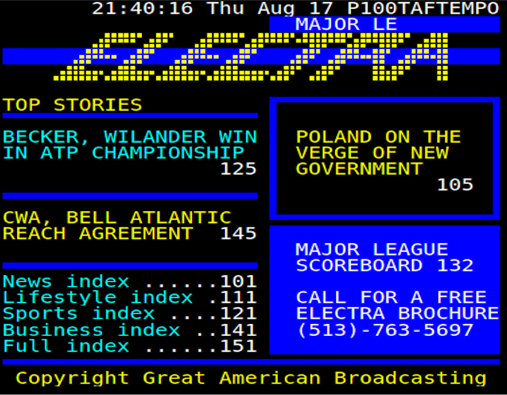
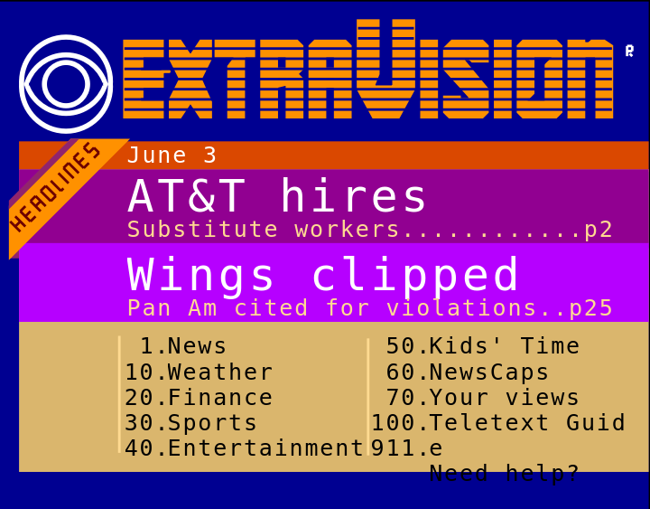
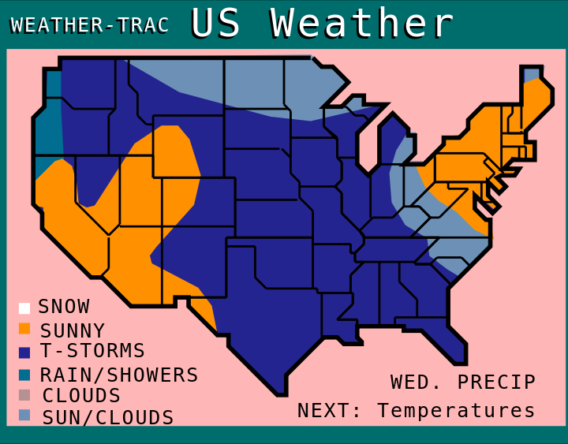
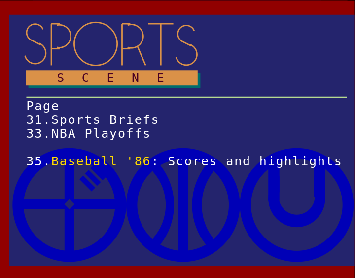
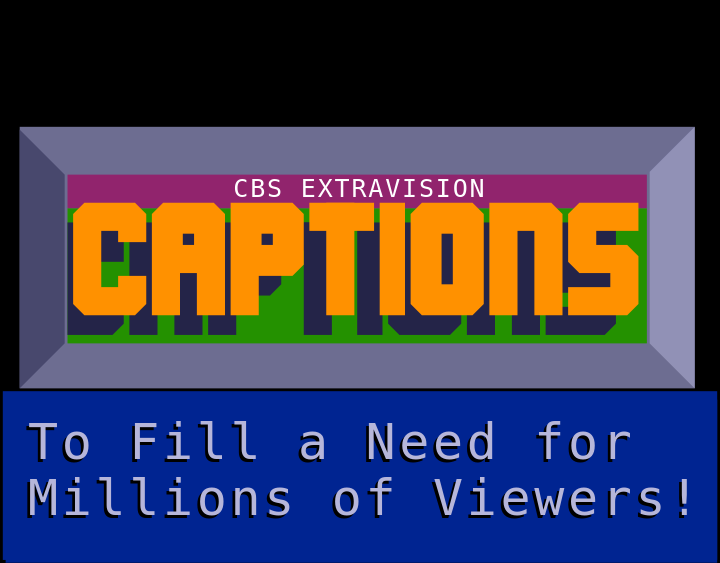
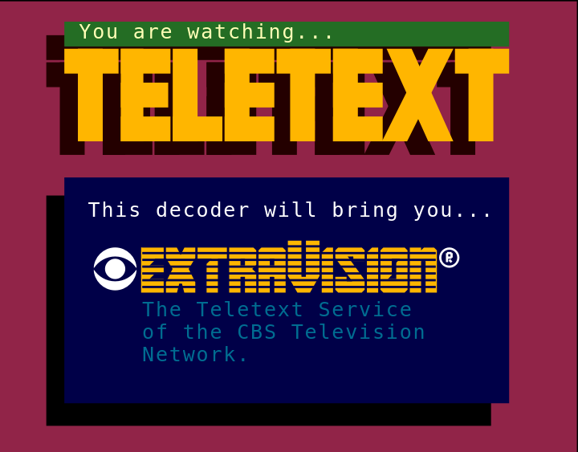

NOTE
This site is under construction.
Welcome to the
U.S. TELETEXT
ARCHIVE
ARCHIVE






On this website is a collection of newly decoded pages from U.S. teletext from various services such as CBS's ExtraVision, NBC's NBC Teletext, and Electra, which was broadcast on TBS (then SuperStation WTBS and SuperStation TBS).
Until now, there had not been any clear, high-quality examples of these teletext services. This site aims to change that by acting as a repository, providing access to individual archives from these services, archives provided by those who have the capacity to decode teletext.